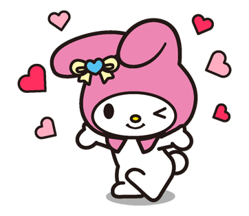
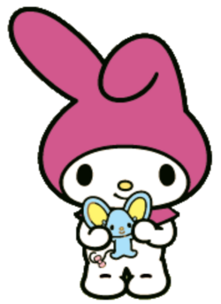
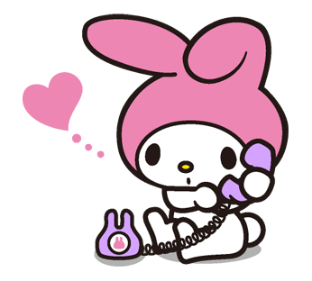

All About My Melody!
Learn all about My Melody, the sweetest bunny around!

|  |
Appearance and PersonalityMy Melody is a little white bunny who is most often seen with her pink or red hood. This is because when she first debuted she was representing "Little Red Riding Hood." She is also often seen with a flower or bow on her hood. She is very good-natured, honest, and overall very generous. She enjoys baking, specificially almond cakes, and she loves her friends. |
FriendsMy Melody is best friends with a little blue mouse named Flat. She is also best friends with Hello Kitty and a pink sheep named My Sweet Piano. Aside from her friends, she has a rival named Kuromi. She is typically very friendly to Kuromi, even though it is not always reciprocated. |
 |
|  |
OriginMy Melody originally debuted in 1975, one year after Hello Kitty. She originally debuted portraying Little Red Riding Hood, but the hood ended up becoming a signature part of her character. Since her release, she had a minor slip in popularity, but eventually bounced back and remains one of the most popular sanrio characters, alongside her friends! |